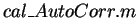

Next: References for STRFPAK's Calculation
Up: Estimating the STRF
Previous: Calculating the STRF
Contents
In the toolbox, the two algorithms are implemented: one is for
the space-time nonseparable case and the other is for the space-time separable
case. If there is reason to believe the real STRF is well approximated by the outer product of a function of time and another in space, the separable algorithm may be preferred because it is faster and uses fewer free parameters. Otherwise, the more general non-separable algorithm may be favorable.
All the functions used by the Estimate section of STRFPAK have
the prefix in their filenames. The rest of the filenames
describes their specific function.
For example,
 program calculates
the auto-correlation of the time-series signals.
As STRF estimation can be computationally intensive, STRFPAK-2.0 provides a progress status bars.
When the calculationa are done, the small Done Estimation
window appears.
2004-08-09